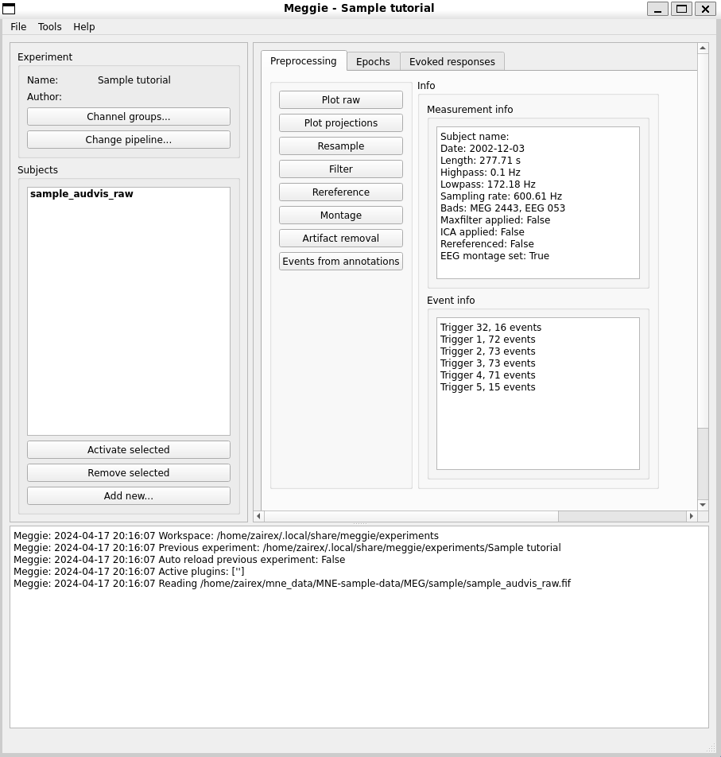

Welcome to Meggie¶
Meggie is an open-source software designed for intuitive MEG and EEG analysis. With its user-friendly graphical interface, Meggie brings the powerful analysis methods of MNE-Python to researchers without requiring programming skills.

Key Features¶
- Cross-Platform: Runs on Linux, macOS, and Windows.
- User-Friendly: Simple graphical user interface for ease of use.
- Efficient Workflows: Supports multi-subject experiments and pipeline processing for streamlined analysis.
Get started with Meggie and explore its features to simplify your MEG/EEG analysis.